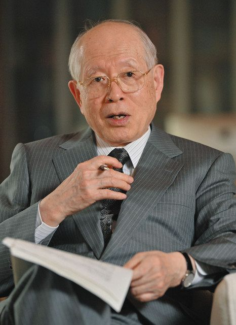

キラリティ
生命の起源
不斉合成
野依良治
高校生向け
もし生命が左右を区別しなかったら、私たちは存在しなかったかもしれない。
このページは、中学生向け版を読んだ人が「わかった」を「なぜそうなるのか」に進めるための高校生版です。すでに中学生向け版を読んだ人は、ここでは理由・構造・意味に注目して読み直してください。
人の右手と左手は、ぱっと見ではよく似ています。指は五本あり、形もほとんど同じです。けれども、右手を左手の上にぴったり重ねることはできません。鏡に映したように似ているのに、同じではない。この関係は、化学の世界ではとても大切です。なぜなら、分子にも「右手型」と「左手型」があるからです。
そしてさらに驚くべきことに、地球上の生命はその両方を公平に使っていません。タンパク質の材料になるアミノ酸は、ほぼすべてがL体です。逆に、DNAやRNA、エネルギー代謝にかかわる糖は、主としてD体です。つまり生命は、最初から「片側だけを使う」ルールの上に立っています。
このブログの中心定義： 生命とは、「左右の自由を捨てることで、秩序を手に入れた存在」である。ホモキラリティは、生命の飾りではなく、生命が生命であるための設計原理かもしれません。
※ここでの「選んだ」「自由を捨てた」という表現は比喩です。実際には、ごく小さな左右差が増幅され、進化の中で片側が固定されたと考えられています。
ここで疑問が生まれます。なぜそんな偏りが生じたのでしょうか。宇宙や地球のどこでその差が作られ、どうやって固定されたのでしょうか。そして、人間はそれを理解し、人工的に再現できるようになったのでしょうか。この問いに正面から取り組んだのが、不斉合成の研究であり、その中心人物の一人が野依良治博士でした。
図1：宇宙の円偏光 → 地球の鉱物 → L体の選択という流れ（人物は含めない）
※この図は有力な仮説モデルを整理した模式図であり、細部まで確定した歴史をそのまま示すものではありません。
図2：ホモキラリティの階層的増幅モデル（宇宙→鉱物→化学反応によるL体優勢の増幅）
このブログで言いたいことは大きく六つあります。第一に、生命がL体だけを使うのは単なる偶然ではなく、秩序ある構造を作るための深い条件だということ。第二に、その偏りは約45億年の地球史の中で、宇宙・鉱物・化学反応の増幅を通して固定された可能性が高いこと。第三に、野依博士の仕事は、自然がしている「左右の選び分け」を人工の化学で再現したことに意味があること。第四に、博士の研究の動機は、単なる便利な反応の開発ではなく、「自然はなぜ片側を選べるのか」という本質的な問いだったこと。第五に、不斉合成は今や医薬品、香料、材料、環境調和型化学の中心技術になっていること。第六に、高校生がこの話をどう受け止めるべきかというと、これは一つの専門分野の知識ではなく、「生命とは何か」を考える入り口だということです。
１。不斉合成とは（不斉とは？）
まず「不斉」という言葉を整理しましょう。不斉とは、左右が同じではないことです。幾何学的に言えば、鏡に映した像と元の物体が重ね合わさらない状態です。化学では、こうした性質をもつ分子をキラル分子と呼びます。キラルという語の語源はギリシャ語の「手」で、右手と左手の関係そのものです。
キラル分子はふつう、中心炭素に四つの異なる置換基がついたときに現れます。すると、その炭素を中心に空間配置が二通りでき、互いに鏡像関係になります。見た目はそっくりですが、完全には重なりません。これがD体・L体やR体・S体といった区別の出発点です。
ここで大事なのは、化学式が同じでも立体配置が違うだけで性質が変わりうることです。重さも、構成元素も、結合関係もほとんど同じなのに、生体の中では片方だけが強く認識されることがあります。これは生命の酵素や受容体が、単なる化学式ではなく、立体の向きまで読み取っているからです。
図3 普通の反応では右型・左型が同程度にできやすい。不斉合成は、そのうち一方だけを選択的に多く作る技術である。
では、不斉合成とは何でしょうか。答えはシンプルです。キラル分子を、片側に偏って作る化学反応です。普通の反応では右と左が50:50でできがちですが、不斉合成では触媒や補助剤を使って、一方だけが通りやすい「立体的な道」を作ります。たとえるなら、右回りの車だけがスムーズに通れる細いゲートを用意するようなものです。
この技術が重要なのは、生命が最初から不斉な世界だからです。酵素の活性部位も、受容体のくぼみも、DNAのらせんも、細胞膜の構成も、すべてが立体的に偏っています。したがって、人間が生命に働きかける薬を作ろうとするときも、分子の向きを制御しなければなりません。不斉合成は、有機化学の高度な一分野に見えますが、その根には「生命は左右を区別する」という、非常に素朴で深い事実があるのです。
ここが本質： 不斉合成は、単に「難しい反応」ではありません。生命が立体を読む世界である以上、正しい向きの分子だけを作ることは、化学が生命に近づくための基本条件です。
重要：D/L と R/S は別物
D体・L体と、R体・S体は同じ意味ではありません。
- D/L：基準分子（グリセルアルデヒド）との相対配置
- R/S：CIP規則による絶対配置
したがって、D＝R、L＝Sとは限りません。ここを混同すると、大学レベルで必ず混乱します。
２。DL体（ラセミ体）、D体、L体
D体とL体は、分子の「右手型」「左手型」を表す歴史的な記号です。厳密には、右回り・左回りの意味そのものではなく、基準となる化合物との相対比較で決められた表記です。けれども高校生が最初に理解する上では、「鏡像だが重ならない二つの型」と考えてよいでしょう。
両者が同量混ざった状態を、DL体あるいはラセミ体と呼びます。試験管の中では「ほとんど同じもの」に見えるかもしれません。しかし、生体はそう見ません。酵素は三次元の鍵穴をもち、そこにぴったりはまる向きだけを選びます。だからL体は反応するのに、D体は反応しない、あるいは逆に邪魔をする、ということが起こりえます。
図4 L体とD体は鏡像異性体である。生命はアミノ酸をほぼL体でそろえ、糖を主としてD体でそろえている。
補足（より正確に）：
タンパク質を構成する標準アミノ酸はL体ですが、例外も存在します。
・グリシンはキラルではない
・一部の細菌ではDアミノ酸も利用される
したがって「ほぼL体」と表現するのが最も正確です。
では、なぜ生命は「両方を自由に使う世界」を選ばなかったのでしょうか。ここで鍵になるのは秩序です。タンパク質は、アミノ酸が長くつながり、さらに折りたたまれて特定の立体構造を取ることで働きます。もしL体とD体がばらばらに混ざると、その折りたたみは不安定になります。αヘリックスやβシートのようなきれいな構造が作りにくくなり、酵素の精密な働きも崩れます。
この意味で、生命は「使えるものを全部使う」方向には進まなかったと言えます。むしろ逆で、片側だけを使うという強い制限を導入することで、初めて高度な秩序と高精度の分子認識を手に入れたのです。自由度が高いことは一見よいことに見えますが、自由すぎると構造は乱れます。生命は、自由を減らすことで秩序を得た存在だと見ることもできます。
Lだけでそろえる利点
折りたたみやすい、酵素が高精度に働く、情報伝達の規格がそろう、複雑な構造を作りやすい。
DL混合世界の問題
立体構造が乱れやすい、分子認識がぶれやすい、自己複製の誤差が増え、安定な生命へ進みにくい。
高校生にとってここは非常に重要な視点です。生命は「便利だからL体を選んだ」のではなく、「L体だけを使わないと高い秩序が保てなかった」のかもしれません。つまり、ホモキラリティは生命の飾りではなく、生命成立の条件そのものだった可能性が高いのです。
言い換えれば、生命は「何でも使える世界」よりも、「片側だけにそろえる世界」を選んだのです。自由度は減りますが、そのかわり、折りたたみ、認識、自己複製の精度は飛躍的に上がります。ここに、生命が秩序を生み出すためには、むしろ制約が必要だったという逆説があります。
３。Ｌ体からなる生命体（サリドマイド禍の教訓）
分子の右と左が本当に重要なのか。教科書だけ読んでいると、少し大げさに感じるかもしれません。しかし医薬品の歴史を見ると、それが命に直結する問題だとわかります。その代表例がサリドマイド事件です。
サリドマイドは、かつて睡眠薬やつわり止めとして使われましたが、多くの胎児に深刻な障害をもたらしました。この事件は、分子の立体化学が医薬品の安全性と深く結びついていることを、社会全体に突きつけました。
サリドマイド問題は単純に「片方が良く、片方が悪い」というだけではありません。重要なのは、体内で鏡像異性体が相互変換（ラセミ化）する点です。つまり、片方だけを投与しても体内で混ざってしまう可能性があります。それでもこの事件が示した核心は明快です。生体は分子の向きまで厳密に区別するということです。
図5 鏡像異性体は、原子の並びが似ていても、生体内では受容体や酵素とのかみ合わせが異なり、効果と副作用が分かれることがある。
サリドマイドに限らず、薬の世界ではこの種の問題がいくらでもあります。パーキンソン病治療に使われるレボドパも、立体化学が本質です。痛み止めや抗炎症薬、香料や農薬の分野でも、片方だけが望ましい効果を示すことが珍しくありません。つまり不斉合成は、研究者の趣味ではなく、社会的に不可欠な技術なのです。
ここから逆に見えてくることもあります。生命はなぜL体だけを使うのか、という問いは、「生命は分子の形をどれだけ厳しく読んでいるか」という問いでもあります。薬が効くかどうかは、分子の形が生体の装置に合うかどうかで決まる。その装置自体が、L体中心の世界の中で進化してきたわけです。だから生命に向けて薬を作る人間も、その世界のルールに従わなければなりません。
サリドマイド禍の教訓： 分子式が同じでも、立体が違えば生体内での意味は変わる。薬は「物質」ではあるが、同時に「形の情報」でもある。
４。ソアイ反応、円偏光、約４５億年の地球史
では、生命の片側性はどこで始まったのでしょうか。ここから話は、薬学や有機合成から一気に生命の起源と地球史へ飛びます。この問題に対して、現在もっとも自然な考え方は、「最初から100対0だったのではなく、ごく小さな偏りが生まれ、それが時間と反応で増幅された」というものです。
大事な科学的注意： 最初になぜL体側が選ばれたのかは、現在も完全にはわかっていません。ここで語るのは有力な仮説の流れであり、「最初の微小な偏りがどう生まれ、どう固定されたか」を考えるのが現代科学の最前線です。
科学的注意：
円偏光によって「L体が選ばれる」と確定しているわけではありません。
現在わかっているのは、一方の鏡像体にわずかな偏りを生む可能性があるという点です。
どちらが選ばれるかは環境条件に依存し、未解明の部分も多いのが現状です。
宇宙からの円偏光
星が生まれる領域には、右回りや左回りの円偏光が存在することがあります。円偏光は、普通の光と違って、電場が回転しながら進む光です。これが有機分子に当たると、一方の鏡像体のほうが壊れやすかったり、残りやすかったりする可能性があります。差はごくわずかでも、最初の「きっかけ」にはなりえます。
鉱物表面による選別
次に、地球上の鉱物や結晶表面です。結晶面もまた、立体的な模様をもっています。分子は単なる点ではなく立体物ですから、ある面にはL体のほうが吸着しやすく、別の面にはD体のほうが付きやすいことがありえます。つまり地球は、単に生命を乗せる舞台ではなく、分子を選別する装置そのものでもあったかもしれないのです。
ソアイ反応―微小な差を巨大化する
そして最も刺激的なのが、ソアイ反応＊です。ソアイ反応では、生成物そのものが次の反応を触媒し、自分と同じ向きをさらに増やしていきます。これを不斉自己触媒といいます。出発点ではほとんどゼロに見えるほど小さな偏りでも、反応が進むにつれてその差が大きくなり、最終的にはほぼ一方だけになることがあります。ここで起きていることを一言で言えば、「ほぼゼロの差が、反応だけで100に近づいていく」ということです。これは化学にとって衝撃的でした。なぜなら、左右差は最初から大きくなくてもよい、むしろごくわずかな偏りでも、反応そのものが歴史を持ち、片側だけの世界を作りうることを示したからです。ソアイ反応は、「生命のホモキラリティが化学的に説明可能かもしれない」という大きな希望を与えました。
（＊注：1995年に硤合彰三（そあい しょうぞう）教授らが発見したソアイ反応の特異性は、「外部からキラルな情報を与えなくても、極めて微小な偏り（場合によっては測定限界に近い差）から一方向のキラリティが自己増幅される点」にあります。これは、従来の不斉合成が外部のキラル源に依存していたのに対し、系そのものが非対称性を生み出しうることを示したものであり、生命誕生以前の化学進化においてホモキラリティが自然発生しうる可能性を示唆する重要な実験例とされています。）
図6 ソアイ反応が示した「微小な不斉の偏りの増幅」という考え方。最初はほとんど差がなくても、自己触媒によって一方が圧倒的に優勢になりうる。
 硤合彰三（Kenso Soai）教授
「ソアイ反応」を発見。この反応は、生命の「右・左（キラリティ）」の起源に関わる重要なヒントを与えた。
硤合彰三（Kenso Soai）教授
「ソアイ反応」を発見。この反応は、生命の「右・左（キラリティ）」の起源に関わる重要なヒントを与えた。
ソアイ反応の衝撃： 左右差は最初から大きくある必要はない。ごく小さな差でも、自己触媒が働けば、化学はその差を拡声器のように増幅し、片側優勢の世界を生み出しうる。
重要な補足：
ソアイ反応のような自己増幅は、すべての化学反応で起こるわけではありません。
特定の条件を満たす非常に特殊な反応系で確認されている現象です。
約45億年の地球史の中で考える
地球は約45億年前に誕生しました。初期地球は高温で、火山活動が激しく、巨大隕石の衝突も多かったと考えられています。その環境で、宇宙由来の有機物、地球上で生じた有機物、鉱物表面、海洋、熱水、光などが複雑に関わりながら化学進化が進みました。最初の有機物がDL混合に近かったとしても不思議ではありません。しかし、円偏光や鉱物表面などがごくわずかな偏りを生み、さらに反応増幅が起これば、その差は決定的なものになりえます。
一度どちらか一方に偏った自己複製系が安定すると、その後は「同じ手だけを使う系」が自分を強化していくでしょう。酵素も、膜も、核酸も、そのルールで組み上がるからです。すると別の向きの分子は、役に立たないどころか、しばしば邪魔になります。こうして、ホモキラリティは単なる結果ではなく、生命系を守る規格として固定された可能性があります。
| 段階 | 起きたかもしれないこと | 意味 |
|---|
| 初期地球 | 有機物はDL混合に近い状態で存在 | 出発点はほぼ対称でもよい |
| 宇宙・鉱物の作用 | 円偏光や結晶面が微小な偏りを生む | 最初の左右差が入る |
| 化学的増幅 | 自己触媒や選択的反応で差が拡大 | 片側優勢が目立つ大きさになる |
| 生命の成立 | 片側でそろった系が安定な機能を持つ | ホモキラリティが固定される |
ここで重要なのは、「L体が特別に神秘的だから選ばれた」と考える必要はないことです。最初は偶然に近い微差だったかもしれません。けれども、その後の増幅と固定の過程が一方向に進めば、結果として生命全体が片側で統一されます。つまり生命は、偶然の小さな差を、進化の長い時間の中で規格へ変えた存在だと言えるのです。
一番大事な見方： 「片側だけが突然現れた」のではなく、「ごく小さな左右差が、増幅され、固定された」と考えると、宇宙・地球・化学・生命が一つの流れでつながる。
最も深い見方：
生命は「L体を選んだ」のではなく、
- 偶然の微小な偏り
- 化学反応による増幅
- 自己複製系による固定（ロックイン）
という三段階によって、結果的に片側へ固定されたと考えるのが最も自然です。
つまり生命とは、
偶然を秩序へ変換したシステムです。
５。野依良治博士の業績（BINAPの立体構造）

野依良治博士（2001年ノーベル化学賞）
不斉合成を「理論」から「社会で使える技術」へ発展させた科学者。
ここで話は、自然が行ってきた「左右の選び分け」を、人間がどう再現したかへ移ります。その中心にいるのが野依良治博士です。博士の最大の功績は、BINAPというキラルな配位子を開発し、それを用いた不斉水素化反応を、実験室の面白い現象ではなく、実用的で高効率な技術に育てたことでした。
BINAPの面白さは、中心に不斉炭素があるのではなく、二つの芳香環がねじれていることでキラリティを持つ点です。これを軸不斉と呼びます。イメージとしては、ねじれたプロペラのような構造です。分子がねじれたまま固定されることで、右巻き・左巻きのような二種類の立体が生まれます。このねじれが、金属触媒の周囲に片側だけが通りやすい立体空間を作るのです。
図7 BINAPは軸不斉をもつキラル配位子である。金属と組み合わさると、反応の場が不斉になり、生成物の左右を選び分けられる。
水素化反応自体は、有機化学では基本的な反応です。二重結合やカルボニル基に水素を付ける、という教科書的な変換です。しかし、そのときに「どちら側から水素を入れるか」を立体的に制御するのは簡単ではありません。野依博士はBINAPを使うことで、この問題を非常に高い精度で解決しました。しかも、それは単に選択性が高いだけでなく、触媒として何度も働き、工業的にも使える効率を示しました。
その象徴的な成功例の一つがL-メントールの合成です。メントールはハッカの香り成分として有名ですが、天然抽出に頼らず、必要な立体のものだけを大量につくることができれば、産業的に大きな価値があります。野依博士の研究は、大学の基礎科学がそのまま工業技術へ結びつくことを世界に示しました。
2001年、野依博士は不斉触媒反応の研究でノーベル化学賞を受賞しました。けれども、その受賞理由を「便利な反応を作ったから」とだけ理解するのは浅すぎます。本当の意味は、自然が生命の中で当たり前にしている「片側だけを選ぶ」という働きを、人間が意識的に再現し、しかも社会で使える技術にまで高めたことにあります。
野依博士の研究の意味： 不斉合成を「きれいな学問」から「産業と医療を支える基盤技術」へ変えたこと。さらに言えば、自然の立体選択を人間が模倣できることを証明したこと。
６。博士は何を思っていたか？
科学者の研究には、実用的な目的だけでなく、もっと深い違和感や問いがあります。野依博士の仕事もそうです。博士の出発点には、「自然は片側だけを選んでいるのに、なぜ人間の化学は左右を選べないのか」という強い疑問がありました。言い換えれば、「自然ができて、人間ができないことを、どうしても理解したい」という思いです。
生命の世界では、アミノ酸はほとんどL体でそろっています。糖はD体でそろっています。つまり自然は、左右のうち片方をきっぱりと選んでいるわけです。ところが人間が普通にフラスコで反応させると、左右はたいてい50:50でできてしまう。この落差は、単に「技術が未熟だから」という話ではありません。自然は何をしているのか。対称な世界から、どうやって非対称が立ち上がるのか。博士の問いは、ここに向かっていました。
図8 野依博士の研究を駆動した本質的な問い。自然は片側を選ぶのに、従来の化学はなぜ左右を選べないのか。
もちろん博士には、実用的な問題意識もありました。薬では、片方が効いてもう片方が効かない、あるいは副作用を示すことがある。もし必要な向きだけを作れれば、薬はより安全で効率的になります。香料や材料でも同じです。したがってこの研究は、哲学的であると同時に社会的でした。自然の秩序を理解することが、そのまま人を助ける技術になるのです。
ここに、野依博士の研究の美しさがあります。自然の片側性に対する驚きがあり、そこから「なぜ」を問う知的誠実さがあり、さらにその問いを、役に立つ技術として具体化する力があった。これは科学の理想的な姿の一つです。博士の研究は、単なる反応開発ではなく、自然の非対称性を人間の手で再現できるのかという思想的な挑戦でもありました。高校生がここから学ぶべきなのは、科学は知識を覚えることではなく、世界に対する違和感を深く掘る営みだということです。
７。その後の展開
野依博士の時代以後、不斉合成はさらに大きく広がりました。金属触媒による不斉反応だけでなく、有機触媒、酵素触媒、光を使う不斉反応、電気化学的な手法など、多くの道具が登場しています。もはや不斉合成は特殊な技術ではなく、現代の創薬・材料科学・香料化学の基盤です。
ここで重要なのは、不斉合成が「正しい向きの分子を作る」だけでなく、「無駄を減らす」技術でもあることです。最初から欲しい鏡像体だけを作れれば、いらない相手を分離して捨てる必要が減ります。これは資源の節約になり、廃棄物も減り、反応工程も短くできます。つまり不斉合成は、グリーンケミストリー、すなわち環境調和型化学にもつながるのです。
さらに近年では、AIとの相性のよさが注目されています。不斉触媒設計は、分子が空間の中でどう向き合い、どの遷移状態が安定になるかという問題です。これは大量の候補を比較し、立体とエネルギーを読む能力が必要なため、計算化学や機械学習との結びつきが強い分野です。特にAIが強いのは、「立体の組み合わせ × エネルギーの組み合わせ」という膨大な探索空間を、人間よりはるかに多く試せる点にあります。人間の直感に加えて、AIが反応経路や触媒候補を提案する時代に入りつつあります。
| 時代 | 中心的な進歩 | 意味 |
|---|
| 野依以前 | 左右を選び分けるのは難しい | 研究室レベルで限定的 |
| 野依の時代 | BINAP・不斉水素化の実用化 | 工業レベルへ到達 |
| 現在 | 有機触媒、酵素、光反応、AI設計 | 創薬・材料・環境技術へ拡大 |
この流れを見ると、不斉合成は「左右の選び分け」という小さな技術ではありません。生命が片側だけを使うという事実を、人間が深く理解し、工学として使えるようになっていく長い流れです。そしてその先には、人工生命設計や地球外生命の想像まで広がる可能性があります。もし宇宙のどこかに生命がいるなら、その生命も片側性を持つのか。D体中心の生命はありうるのか。DLを混ぜて使う別種の生命は理論上可能なのか。右と左の問題は、生命全体の設計原理へつながっています。
まとめ―高校生はどう受け止めるべきか
最後に、このブログのポイントを整理します。
- 分子には右と左があり、鏡像だが重ならない。この性質をキラリティという。
- 生命はアミノ酸をほぼL体でそろえ、糖を主にD体でそろえている。これがホモキラリティである。
- 片側だけを使うのは、秩序ある立体構造と高精度な分子認識を成立させるために重要だった可能性が高い。
- 宇宙の円偏光や地球の鉱物表面がごく小さな偏りを生み、ソアイ反応のような増幅機構がそれを決定的な差へ広げたと考えられる。
- 野依良治博士は、自然が行っている「左右の選択」を人工の触媒で再現し、不斉合成を医薬品や産業で使える技術に高めた。
- 不斉合成は現在も発展中で、創薬、材料科学、グリーンケミストリー、AI分子設計へと広がっている。
では高校生は、この話をどう受け止めればよいのでしょうか。私は、ここに科学の面白さが凝縮されていると思います。なぜなら一つの問いが、化学の立体構造から生命の起源へ、薬の安全性へ、産業技術へ、そして人間の知のあり方へつながっているからです。学校の教科はしばしば化学、生物、地学、物理に分かれていますが、本当の問いは境界を越えてきます。「なぜ命は右と左を選んだのか」という問いは、その典型です。
もう一つ大切なのは、科学は「答えを暗記すること」ではなく、「世界の不思議に対して、どこが本質かを見抜くこと」だという点です。野依博士の研究は、自然と人間の化学の間にある小さな違和感から始まりました。なぜ自然は片方だけを選ぶのに、人間の化学はそれができないのか。その違和感を真面目に追い続けた結果、ノーベル賞級の仕事が生まれたのです。
だからこのテーマを学ぶとき、高校生に必要なのは「難しい」と引くことではありません。むしろ、「生命が片側だけを使うという事実は、何を意味しているのか」と自分で考えてみることです。そこから、生命は偶然の寄せ集めではなく、強い制約の上に成立した秩序だ、という見方が見えてきます。そして人間の化学は、その秩序を少しずつ理解し、模倣し、利用し始めている。ここに現代科学のダイナミズムがあります。
最後に一文で言えば： 生命とは、左右の自由を捨てることで秩序を手に入れた存在であり、不斉合成とは、その自然の深い原理を人間が理解し、再現しようとする試みなのです。
※ここでの表現は比喩であり、実際には微小な左右差の増幅と進化的固定として理解するのが科学的により正確です。
メッセージ： このテーマは「不斉合成」という専門用語を覚えるためのものではありません。生命とは何か、秩序とは何か、自然を人間はどこまで理解し再現できるのかを考えるための入口です。